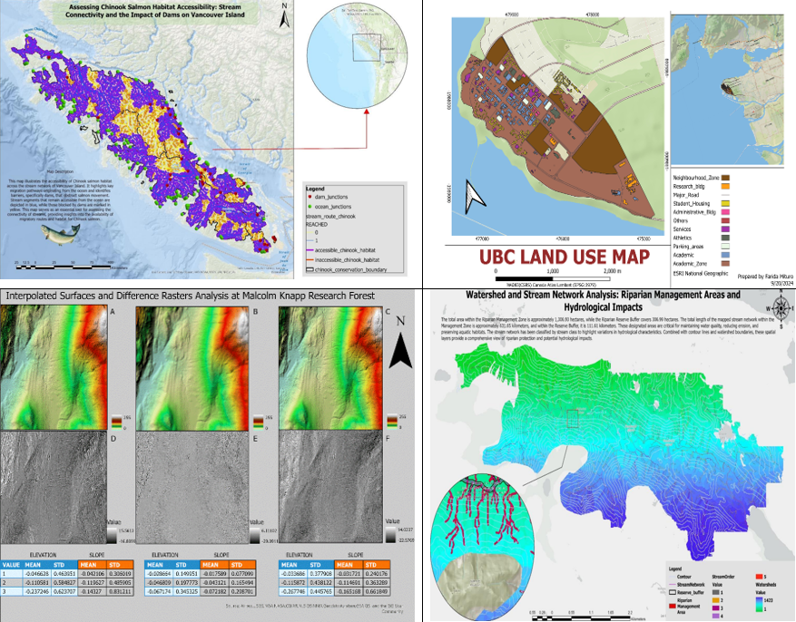
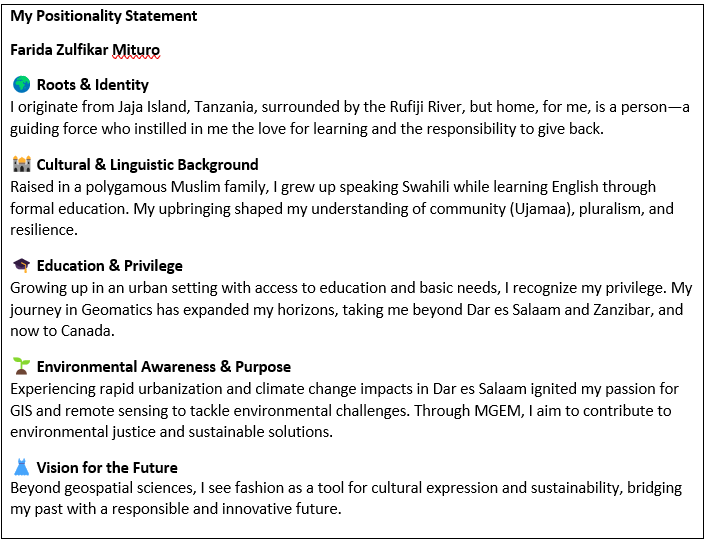

Content & Deliverables
Project 1 - Capstone Deliverables, Mapping Mangroves in The Gambia using GEM V2
My capstone project explores the mapping and monitoring of mangrove ecosystems in The Gambia using the Google Earth Engine Mangrove Mapping Methodology (GEM V2). This research leverages remote sensing, geospatial analysis, and machine learning to assess mangrove extent, classify land cover, and detect changes over time using Sentinel-2 and Landsat imagery. The study follows a structured workflow across three key modules 1 to 3.
This research has allowed me to integrate and apply key skills acquired throughout my MGEM program, including satellite imagery analysis, spectral interpretation, and geospatial modeling. By utilizing QGIS, Google Earth Engine, and machine learning techniques, I have generated high-resolution mangrove classification maps that contribute valuable data for coastal conservation and sustainable management in The Gambia.
The next step involves visualizing the outputs from each module through interactive maps, making the results accessible and engaging for further analysis and decision-making
Module 1 Sentinel-2
This module focused on preprocessing Sentinel-2 and Landsat imagery, including cloud masking and atmospheric correction. Key spectral indices such as MNDWI, CMRI, MMRI, and SAVI were computed to enhance the identification of mangrove areas. The processed images serve as the foundation for classification in the subsequent modules.
Module 2: Mangrove Classification Map
Building upon the outputs from Module 1, this module applied a Random Forest classifier using the Classification Reference Areas (CRAs). The classification was performed separately for contemporary and historical datasets, allowing for an assessment of mangrove distribution over time. The spectral relationships among land cover classes were also analyzed to ensure accurate classification.
For a full-screen experience, click here
Module 3: Mangrove Change Detection Map
This module identified areas of mangrove gain, loss, and persistence by comparing historical and contemporary classifications. By integrating change detection analysis, it provides insight into the extent of mangrove ecosystem changes, highlighting areas requiring conservation efforts.
For a full-screen experience, click here
REMOTE SENSING FOR ECOSYSTEM MANAGEMENT
Through GEM 520 - Remote Sensing for Ecosystem Management, I have gained a deep understanding of remote sensing principles and practical applications in environmental analysis. Working with satellite imagery, spectral indices, and classification techniques has enhanced my ability to analyze land cover changes and ecosystem dynamics.
One key takeaway has been the integration of time-series analysis, spectral signatures, and classification models to assess environmental change. This was particularly evident in my mangrove mapping project, where I applied image preprocessing, classification, and accuracy assessment techniques to generate reliable land cover maps. Additionally, working with spatial data in R, ENVI, and QGIS has strengthened my technical skills, allowing me to explore multi-temporal analyses, vegetation indices, and land cover transitions.
This experience has not only reinforced my analytical and problem-solving skills but also demonstrated the value of remote sensing in ecological monitoring and conservation planning.
GEOGRAPHIC INFORMATION SYSTEM FOR ENVIRONMENTAL MANAGEMENT
Through GEM 510 and GEM 511, I have developed a strong foundation in spatial analysis, terrain modeling, and environmental management using GIS. These courses provided hands-on experience in working with LiDAR data, digital elevation models (DEMs), spatial interpolation, hydrological analysis, and riparian area management. The integration of these skills allowed me to analyze landscapes effectively, assess ecological networks, and apply GIS to real-world environmental challenges.
One of the key aspects I have gained is the importance of cartography in effectively communicating spatial information. A well-designed map is essential for conveying complex environmental data, ensuring clarity, accuracy, and usability for decision-making. By applying cartographic principles, I have learned how to create visually compelling and informative maps that enhance spatial analysis. Here are some 2D and 3D maps I created using the knowledge I acquired from this course.

LANDSCAPE ECOLOGY AND MANAGEMENT
I have come to appreciate the intricate relationship between spatial patterns and ecological processes. Understanding forest disturbances, landscape connectivity, and network analysis has provided a deeper perspective on how ecosystems function and respond to change. Landscape change modeling has shown me that landscapes are not static but shaped by both natural and anthropogenic forces. This course has reinforced that data alone cannot tell a story; context, interpretation, and integration are essential in making informed environmental decisions.
Example of Network and Connectivity approach is in the Pacific Northwest, wolves depend on large, interconnected forested landscapes for movement and survival. Similarly, salmon rely on well-connected stream networks to migrate between spawning and feeding grounds, emphasizing the importance of riparian corridor preservation. In regions like the Great Plains, fragmented grasslands impact pollinator species, illustrating how habitat patch size and connectivity directly influence biodiversity. These real-world applications reinforce the necessity of spatial modeling for conservation strategies, helping to balance ecosystem integrity with land-use planning.
PROFFESSIONAL COMMUNICATION
I have developed a deeper understanding of how effective communication shapes professional and academic interactions. Crafting my positionality statement allowed me to reflect on my identity, values, and biases, reinforcing how personal perspectives influence research and decision-making. Audience messaging emphasized the importance of tailoring communication to different stakeholders, a skill crucial in conveying complex geospatial data to diverse audiences. Exploring conflict styles and negotiation provided insights into managing disagreements constructively, fostering collaboration in interdisciplinary and cross-cultural settings. Overall, this course has strengthened my ability to engage in meaningful discussions, advocate for my ideas, and navigate professional spaces with confidence and clarity.
